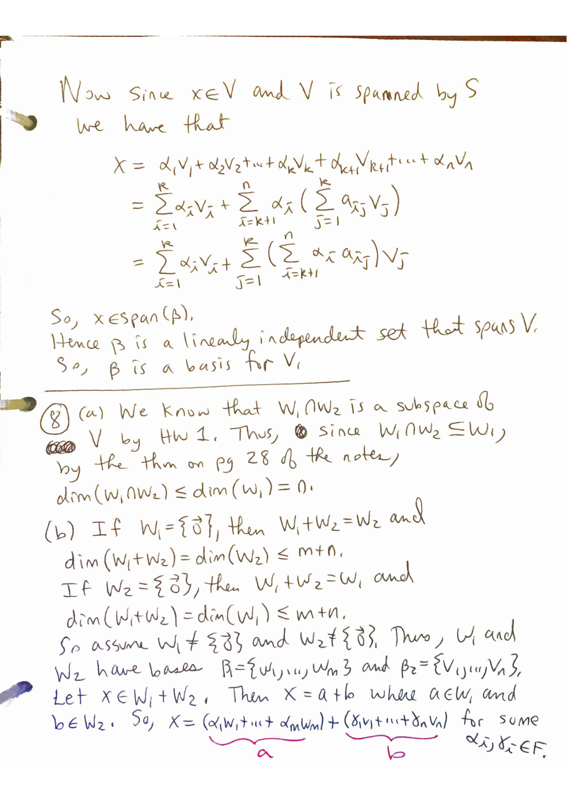

MATH 4570 Topic 2: Spanning sets, Linear Independence, Bases, Dimension
Krebs' Fall 2026 MATH 4570 homework and extra practice problems, retyped verbatim from his PDFs. Homework solutions are Krebs' official ones (his pages, shown as images); extra-practice solutions are Claude's and labeled so. Tap "Solution" under a problem to jump to it, and "Problem" to jump back.
For: Quiz 2 (Mon Sep 28) · all quiz dates
Problems
Homework for Topic 2
Recall from HW 1: Let $V$ be a vector space over a field $F$. Let $W_1$ and $W_2$ be subspaces of $V$. Define the sum of $W_1$ and $W_2$ to be the set
$$W_1 + W_2 = \{x + y \mid x \in W_1 \text{ and } y \in W_2\}$$
1(a)
Let $V = M_{2,2}(\mathbb{R})$ and
$$W_1 = \left\{ \begin{pmatrix} a & b \\ c & a \end{pmatrix} \mid a, b, c \in \mathbb{R} \right\}$$
and
$$W_2 = \left\{ \begin{pmatrix} 0 & a \\ -a & b \end{pmatrix} \mid a, b \in \mathbb{R} \right\}$$
(a) Prove that $W_1$ and $W_2$ are subspaces of $M_{2,2}(\mathbb{R})$.
1(b)
(b) Find the dimensions of $W_1$, $W_2$, $W_1 \cap W_2$ and $W_1 + W_2$.
2
Let $V$ be a vector space over a field $F$. Let $v_1, v_2, \cdots, v_n$ be vectors in $V$. Prove that if one of the $v_i$ is the zero vector, then the vectors $v_1, v_2, \ldots, v_n$ are linearly dependent.
3
Let $F$ be either $\mathbb{R}$ or $\mathbb{C}$. Prove that $P_n(F)$ has dimension $n + 1$.
4
Let $P(\mathbb{R})$ denote the set of all polynomials with coefficients from $\mathbb{R}$. You may assume that $P(\mathbb{R})$ is a vector space over $\mathbb{R}$. Show that $P(\mathbb{R})$ is not finite dimensional.
5
Let $V$ be a vector space over a field $F$. Let $x, y \in V$. Then $\{x, y\}$ is a linearly dependent set if and only if $x$ or $y$ is a multiple of the other.
6
Let $V$ be a vector space over a field $F$. Let $x \in V$ with $x \neq \mathbf{0}$. Then $\{x\}$ is a linearly independent set.
7(a)
Let $V$ be a vector space over a field $F$.
(a) Let $S$ be a finite set of linearly independent vectors from $V$ and let $v \in V$ where $v \notin S$. Then $S \cup \{v\}$ is linearly dependent if and only if $v \in \operatorname{span}(S)$.
7(b)
(b) Suppose that $V \neq \{\mathbf{0}\}$ is spanned by some finite set $S$. Prove that some subset of $S$ is a basis for $V$. Thus $V$ is finite-dimensional.
8(a)
Let $W_1$ and $W_2$ be subspaces of a vector space $V$. Suppose that $\dim(W_1) = m$ and $\dim(W_2) = n$ and $m \leq n$.
(a) Prove that $\dim(W_1 \cap W_2) \leq m = \min(\dim(W_1), \dim(W_2))$
9
(This problem shows how to extend a basis from a subspace of a finite-dimensional vector space to the entire space.) Let $V$ be a finite-dimensional vector space of dimension $n \neq 0$ over a field $F$. Let $W$ be a subspace of $V$ with $W \neq \{\mathbf{0}\}$. In class we showed that $W$ must be finite-dimensional and hence have a basis $\beta = \{w_1, w_2, \ldots, w_k\}$ with $1 \leq k \leq n$. Prove that there exist vectors $v_{k+1}, \ldots, v_n$ from $V \setminus W$ such that $\beta' = \{w_1, w_2, \ldots, w_k, v_{k+1}, \ldots, v_n\}$ is a basis for $V$.
Extra practice problems for Topic 2
These problems were generated by AI, and although I looked at them quickly to see if they seemed OK, no guarantees. Please let me know if something doesn't make sense, so I can fix it.
1
Part 1: Computational problems
Let
$$v_1 = (2, 1) \qquad \text{and} \qquad v_2 = (-1, 1).$$
For each of the following vectors $w$, find constants $c_1, c_2 \in \mathbb{R}$ such that
$$w = c_1 v_1 + c_2 v_2 :$$
$$(1, 5), \qquad (4, -1), \qquad (0, 3).$$
2(a)
Let
$$v_1 = (1, 0, 1), \qquad v_2 = (0, 1, 1), \qquad v_3 = (1, 1, 0).$$
(a) Find constants $c_1, c_2, c_3 \in \mathbb{R}$ such that
$$(4, 2, 6) = c_1 v_1 + c_2 v_2 + c_3 v_3.$$
2(b)
(b) Find constants $c_1, c_2, c_3 \in \mathbb{R}$ such that
$$(-1, 3, 2) = c_1 v_1 + c_2 v_2 + c_3 v_3.$$
3
Let
$$S = \{(1, 2, -1), (2, -1, 3)\}.$$
Determine which of the following vectors belong to $\operatorname{span}(S)$. For each vector that does belong to $\operatorname{span}(S)$, find coefficients expressing it as a linear combination of the vectors in $S$:
$$(3, 1, 2), \qquad (0, 5, -5), \qquad (4, 3, 1), \qquad (-1, 8, -7).$$
4
Let
$$A = \begin{pmatrix} 1 & 0 \\ 1 & 1 \end{pmatrix}, \qquad B = \begin{pmatrix} 0 & 1 \\ 1 & 0 \end{pmatrix}, \qquad C = \begin{pmatrix} 1 & 1 \\ 0 & -1 \end{pmatrix}.$$
Determine which of the following matrices belong to $\operatorname{span}\{A, B, C\}$. For each one that does, find coefficients expressing it as a linear combination of $A$, $B$, and $C$:
$$\begin{pmatrix} 2 & 3 \\ 4 & 0 \end{pmatrix}, \qquad \begin{pmatrix} 1 & 0 \\ 0 & 1 \end{pmatrix}, \qquad \begin{pmatrix} 3 & -1 \\ 2 & 4 \end{pmatrix}.$$
5(a)
Let
$$p_1(x) = 1 + x, \qquad p_2(x) = x + x^2, \qquad p_3(x) = 1 - x^2.$$
(a) Find constants $c_1, c_2, c_3 \in \mathbb{R}$ such that
$$2 + 5x + 3x^2 = c_1 p_1(x) + c_2 p_2(x) + c_3 p_3(x).$$
6(a)
In the vector space $C(\mathbb{R}, \mathbb{R})$, let
$$f_1(x) = 1, \qquad f_2(x) = \sin x, \qquad f_3(x) = \cos x.$$
For each of the following functions $g$, find $c_1, c_2, c_3 \in \mathbb{R}$ such that
$$g = c_1 f_1 + c_2 f_2 + c_3 f_3,$$
or state that no such constants exist:
(a) $$g(x) = 3 - 2\sin x + 5\cos x$$
7
In $C(\mathbb{R}, \mathbb{R})$, let
$$f_1(x) = e^x, \qquad f_2(x) = e^{-x}.$$
Determine which of the following functions belong to $\operatorname{span}\{f_1, f_2\}$. For each one that does, find the appropriate coefficients:
$$3e^x - 2e^{-x}, \qquad \cosh x, \qquad \sinh x, \qquad e^{2x}, \qquad 0.$$
You may use
$$\cosh x = \frac{e^x + e^{-x}}{2}, \qquad \sinh x = \frac{e^x - e^{-x}}{2}.$$
8
For each value of $a \in \mathbb{R}$, determine whether the following vectors are linearly independent:
$$(1, 1, 0), \qquad (0, 1, 1), \qquad (1, 0, a).$$
9(a)
Determine whether each of the following sets is linearly independent.
(a) $$\{(1, 2, 0), (0, 1, 3), (2, 5, 3)\} \subseteq \mathbb{R}^3$$
10(a)
Determine whether each of the following sets of matrices is linearly independent.
(a) $$\left\{ \begin{pmatrix} 1 & 0 \\ 0 & 1 \end{pmatrix}, \begin{pmatrix} 0 & 1 \\ 1 & 0 \end{pmatrix}, \begin{pmatrix} 1 & 1 \\ 1 & 1 \end{pmatrix} \right\}$$
10(b)
(b) $$\left\{ \begin{pmatrix} 1 & 0 \\ 0 & 0 \end{pmatrix}, \begin{pmatrix} 0 & 1 \\ 0 & 0 \end{pmatrix}, \begin{pmatrix} 0 & 0 \\ 1 & 0 \end{pmatrix}, \begin{pmatrix} 0 & 0 \\ 0 & 1 \end{pmatrix} \right\}$$
10(c)
(c) $$\left\{ \begin{pmatrix} 1 & 1 \\ 0 & 1 \end{pmatrix}, \begin{pmatrix} 0 & 1 \\ 1 & 0 \end{pmatrix}, \begin{pmatrix} 1 & 0 \\ -1 & 1 \end{pmatrix} \right\}$$
11(a)
Determine whether each of the following sets of polynomials is linearly independent.
(a) $$\{1 + x,\ x + x^2,\ 1 - x^2\} \subseteq P_2(\mathbb{R})$$
12(a)
For each of the following sets, determine whether it is a basis for the indicated vector space.
(a) $$\{(1, 2), (3, 1)\} \quad \text{for } \mathbb{R}^2$$
12(d)
(d) $$\left\{ \begin{pmatrix} 1 & 0 \\ 0 & 1 \end{pmatrix}, \begin{pmatrix} 1 & 0 \\ 0 & -1 \end{pmatrix}, \begin{pmatrix} 0 & 1 \\ 1 & 0 \end{pmatrix}, \begin{pmatrix} 0 & 1 \\ -1 & 0 \end{pmatrix} \right\} \quad \text{for } M_{2,2}(\mathbb{R})$$
13(a)
From each of the following spanning sets, select a subset that is a basis for the indicated vector space.
(a) $$\{(1, 0), (0, 1), (1, 1), (2, -1)\} \quad \text{for } \mathbb{R}^2$$
13(b)
(b) $$\{(1, 0, 0), (0, 1, 0), (1, 1, 0), (0, 0, 1), (1, 1, 1)\} \quad \text{for } \mathbb{R}^3$$
13(d)
(d) $$\left\{ \begin{pmatrix} 1 & 0 \\ 0 & 0 \end{pmatrix}, \begin{pmatrix} 0 & 1 \\ 0 & 0 \end{pmatrix}, \begin{pmatrix} 1 & 1 \\ 0 & 0 \end{pmatrix}, \begin{pmatrix} 0 & 0 \\ 1 & 0 \end{pmatrix}, \begin{pmatrix} 0 & 0 \\ 0 & 1 \end{pmatrix} \right\} \quad \text{for } M_{2,2}(\mathbb{R})$$
14(a)
Extend each of the following linearly independent sets to a basis for the indicated vector space.
(a) $$\{(1, 1, 0)\} \quad \text{in } \mathbb{R}^3$$
14(d)
(d) $$\left\{ \begin{pmatrix} 1 & 0 \\ 0 & 1 \end{pmatrix}, \begin{pmatrix} 0 & 1 \\ 1 & 0 \end{pmatrix} \right\} \quad \text{in } M_{2,2}(\mathbb{R})$$
15(a)
Find the dimension of each vector space.
(a) $$W = \{(a, b, c, d) \in \mathbb{R}^4 \mid a + b + c + d = 0\}$$
15(c)
(c) $$W = \left\{ \begin{pmatrix} a & b \\ c & d \end{pmatrix} \in M_{2,2}(\mathbb{R}) \;\middle|\; a = d \right\}$$
15(d)
(d) $$W = \left\{ \begin{pmatrix} a & b \\ c & d \end{pmatrix} \in M_{2,2}(\mathbb{R}) \;\middle|\; a + d = 0,\ b = c \right\}$$
16
Let
$$W_1 = \left\{ \begin{pmatrix} a & b \\ c & a \end{pmatrix} \;\middle|\; a, b, c \in \mathbb{R} \right\}$$
and
$$W_2 = \left\{ \begin{pmatrix} d & e \\ -e & 0 \end{pmatrix} \;\middle|\; d, e \in \mathbb{R} \right\}.$$
Find bases and dimensions for
$$W_1, \qquad W_2, \qquad W_1 \cap W_2, \qquad W_1 + W_2.$$
17
Let $V = P_3(\mathbb{R})$, and let
$$W_1 = \{p(x) \in P_3(\mathbb{R}) \mid p(1) = 0\}$$
and
$$W_2 = \{p(x) \in P_3(\mathbb{R}) \mid p(-1) = 0\}.$$
Find bases and dimensions for
$$W_1, \qquad W_2, \qquad W_1 \cap W_2, \qquad W_1 + W_2.$$
18(a)
Let
$$\beta = \{(1, 1), (1, -1)\}.$$
Find the coordinates of each vector relative to the ordered basis $\beta$:
(a) $(4, 2)$
19(a)
Let
$$\beta = \{1 + x,\ x - x^2,\ 1 - x^2\}.$$
NOTE: This is a change to what had been here before; the pravious $\beta$ was not a basis. Find the coordinates relative to $\beta$ of each of the following polynomials:
(a) $2 + 3x + x^2$
1
Part 2: Proof problems
Let $V$ be a vector space over a field $F$, and let
$$v_1, v_2, \ldots, v_n \in V.$$
Prove that
$$\operatorname{span}\{v_1, v_2, \ldots, v_n\}$$
is a subspace of $V$.
2
Let $V$ be a vector space over a field $F$, and let
$$v_1, v_2, \ldots, v_n \in V.$$
Prove that $\operatorname{span}\{v_1, \ldots, v_n\}$ is the smallest subspace of $V$ containing all of the vectors $v_1, \ldots, v_n$. More precisely, prove that if $U$ is a subspace of $V$ and
$$v_1, \ldots, v_n \in U,$$
then
$$\operatorname{span}\{v_1, \ldots, v_n\} \subseteq U.$$
3
Let $V$ be a vector space over a field $F$. Prove that every set of vectors containing the zero vector is linearly dependent.
4
Let $V$ be a vector space over a field $F$, and let $v \in V$. Prove that the one-element set
$$\{v\}$$
is linearly independent if and only if $v \neq \mathbf{0}$.
5
Let $V$ be a vector space over a field $F$. Prove that every subset of a linearly independent set is linearly independent.
6
Let $V$ be a vector space over a field $F$. Prove that every set containing a linearly dependent subset is itself linearly dependent.
7
Let $V$ be a vector space over a field $F$, and let $v, w \in V$. Prove that
$$\{v, w\}$$
is linearly dependent if and only if at least one of $v$ and $w$ is a scalar multiple of the other.
8
Let $V$ be a vector space over a field $F$, and suppose that
$$v_1, \ldots, v_n$$
are linearly independent. Let $v \in V$. Prove that
$$\{v_1, \ldots, v_n, v\}$$
is linearly dependent if and only if
$$v \in \operatorname{span}\{v_1, \ldots, v_n\}.$$
9
Let
$$\beta = \{v_1, \ldots, v_n\}$$
be a basis for a vector space $V$ over a field $F$. Prove that every $v \in V$ can be written in exactly one way as
$$v = c_1 v_1 + \cdots + c_n v_n, \qquad c_1, \ldots, c_n \in F.$$
10
Let $V \neq \{\mathbf{0}\}$ be a vector space over a field $F$, and suppose that a finite set $S$ spans $V$. Prove that some subset of $S$ is a basis for $V$.
11
Let $V$ be a finite-dimensional vector space, and let
$$S = \{v_1, \ldots, v_k\}$$
be a linearly independent subset of $V$. Prove that $S$ can be extended to a basis for $V$.
12
Let $V$ be a finite-dimensional vector space, and let $W$ be a subspace of $V$. Prove that
$$\dim(W) \leq \dim(V).$$
Prove also that equality holds if and only if $W = V$.
13
Let $W_1$ and $W_2$ be finite-dimensional subspaces of a vector space $V$. Prove that
$$\dim(W_1 \cap W_2) \leq \min\{\dim(W_1), \dim(W_2)\}.$$
14
Let $W_1$ and $W_2$ be finite-dimensional subspaces of a vector space $V$. Prove that
$$\dim(W_1 + W_2) \leq \dim(W_1) + \dim(W_2).$$
16
Let $P(\mathbb{R})$ be the vector space of all real polynomials. Prove that $P(\mathbb{R})$ is not finite-dimensional.
17
Let $C(\mathbb{R}, \mathbb{R})$ be the vector space of all continuous functions from $\mathbb{R}$ to $\mathbb{R}$. Prove that
$$1, x, x^2, \ldots, x^n$$
are linearly independent elements of $C(\mathbb{R}, \mathbb{R})$ for every nonnegative integer $n$.
18
Use the preceding problem to prove that $C(\mathbb{R}, \mathbb{R})$ is not finite-dimensional.
19
Let
$$W = \{p(x) \in P_n(\mathbb{R}) \mid p(0) = 0\}.$$
Prove that $W$ is a subspace of $P_n(\mathbb{R})$, and then find and prove a formula for $\dim(W)$.
20
Let
$$W = \{p(x) \in P_n(\mathbb{R}) \mid p(1) = 0\}.$$
Prove that $W$ is a subspace of $P_n(\mathbb{R})$, and then find and prove a formula for $\dim(W)$.
Solutions
Krebs' official solutions: Homework for Topic 2

Solutions by Claude (not official)
Extra practice problems for Topic 2
1 (Claude, not official)
Write $w = (w_1, w_2)$. Then $c_1 v_1 + c_2 v_2 = (2c_1 - c_2,\ c_1 + c_2)$, so we must solve
$$2c_1 - c_2 = w_1, \qquad c_1 + c_2 = w_2.$$
Adding the equations gives $3c_1 = w_1 + w_2$, so $c_1 = \frac{w_1 + w_2}{3}$, and then $c_2 = w_2 - c_1 = \frac{2w_2 - w_1}{3}$.
$w = (1,5)$: $c_1 = \frac{6}{3} = 2$, $c_2 = \frac{10 - 1}{3} = 3$. Check: $2(2,1) + 3(-1,1) = (4 - 3, 2 + 3) = (1, 5)$.
$w = (4,-1)$: $c_1 = \frac{3}{3} = 1$, $c_2 = \frac{-2 - 4}{3} = -2$. Check: $(2,1) - 2(-1,1) = (2 + 2, 1 - 2) = (4, -1)$.
$w = (0,3)$: $c_1 = \frac{3}{3} = 1$, $c_2 = \frac{6 - 0}{3} = 2$. Check: $(2,1) + 2(-1,1) = (2 - 2, 1 + 2) = (0, 3)$.
Answer: $(1,5) = 2v_1 + 3v_2$, $(4,-1) = v_1 - 2v_2$, $(0,3) = v_1 + 2v_2$.
2(a) (Claude, not official)
In general, $c_1 v_1 + c_2 v_2 + c_3 v_3 = (c_1 + c_3,\ c_2 + c_3,\ c_1 + c_2)$. To get $(a, b, c)$ we solve
$$c_1 + c_3 = a, \qquad c_2 + c_3 = b, \qquad c_1 + c_2 = c.$$
Adding all three equations: $2(c_1 + c_2 + c_3) = a + b + c$, so $s := c_1 + c_2 + c_3 = \frac{a+b+c}{2}$. Subtracting each equation from $s$:
$$c_1 = s - b = \tfrac{a - b + c}{2}, \qquad c_2 = s - a = \tfrac{-a + b + c}{2}, \qquad c_3 = s - c = \tfrac{a + b - c}{2}.$$
With $(a,b,c) = (4,2,6)$: $s = 6$, so $c_1 = 6 - 2 = 4$, $c_2 = 6 - 4 = 2$, $c_3 = 6 - 6 = 0$.
Check: $4(1,0,1) + 2(0,1,1) + 0(1,1,0) = (4, 2, 6)$.
Answer: $c_1 = 4,\ c_2 = 2,\ c_3 = 0$.
2(b) (Claude, not official)
Using the general formulas from part (a) with $(a,b,c) = (-1,3,2)$: $s = \frac{-1 + 3 + 2}{2} = 2$, so $c_1 = s - b = -1$, $c_2 = s - a = 3$, $c_3 = s - c = 0$.
Check: $-(1,0,1) + 3(0,1,1) + 0(1,1,0) = (-1, 3, -1 + 3) = (-1, 3, 2)$.
Answer: $c_1 = -1,\ c_2 = 3,\ c_3 = 0$.
2(c) (Claude, not official)
From the computation in part (a), for every $(a,b,c) \in \mathbb{R}^3$ the scalars
$$c_1 = \tfrac{a - b + c}{2}, \qquad c_2 = \tfrac{-a + b + c}{2}, \qquad c_3 = \tfrac{a + b - c}{2}$$
satisfy $c_1 v_1 + c_2 v_2 + c_3 v_3 = (a, b, c)$. (Check: $c_1 + c_3 = \frac{2a}{2} = a$, $c_2 + c_3 = \frac{2b}{2} = b$, $c_1 + c_2 = \frac{2c}{2} = c$.) Hence $\mathbb{R}^3 \subseteq \operatorname{span}\{v_1, v_2, v_3\}$, and the reverse inclusion is clear since $\operatorname{span}\{v_1,v_2,v_3\} \subseteq \mathbb{R}^3$.
Answer: $\operatorname{span}\{v_1, v_2, v_3\} = \mathbb{R}^3$. (Equivalently, $\det\begin{pmatrix} 1 & 0 & 1 \\ 0 & 1 & 1 \\ 1 & 1 & 0 \end{pmatrix} = -2 \neq 0$.)
3 (Claude, not official)
We have $c_1(1,2,-1) + c_2(2,-1,3) = (c_1 + 2c_2,\ 2c_1 - c_2,\ -c_1 + 3c_2)$. For a target $(a,b,c)$ we solve the first two equations $c_1 + 2c_2 = a$, $2c_1 - c_2 = b$ (which always have the unique solution $c_1 = \frac{a + 2b}{5}$, $c_2 = \frac{2a - b}{5}$) and then test whether the third equation $-c_1 + 3c_2 = c$ holds.
$(3,1,2)$: $c_1 = \frac{3+2}{5} = 1$, $c_2 = \frac{6-1}{5} = 1$. Third coordinate: $-1 + 3 = 2$. Yes. $(3,1,2) = 1\cdot(1,2,-1) + 1\cdot(2,-1,3)$.
$(0,5,-5)$: $c_1 = \frac{0+10}{5} = 2$, $c_2 = \frac{0-5}{5} = -1$. Third: $-2 - 3 = -5$. Yes. $(0,5,-5) = 2(1,2,-1) - (2,-1,3)$.
$(4,3,1)$: $c_1 = \frac{4+6}{5} = 2$, $c_2 = \frac{8-3}{5} = 1$. Third: $-2 + 3 = 1$. Yes. $(4,3,1) = 2(1,2,-1) + (2,-1,3)$.
$(-1,8,-7)$: the first two equations force $c_1 = \frac{-1+16}{5} = 3$, $c_2 = \frac{-2-8}{5} = -2$, but then the third coordinate is $-3 - 6 = -9 \neq -7$. Since the first two equations have only this solution, no choice of $c_1, c_2$ works: $(-1,8,-7) \notin \operatorname{span}(S)$.
(Shortcut: $(1,2,-1) \times (2,-1,3) = (5,-5,-5)$, so $\operatorname{span}(S)$ is the plane $a - b - c = 0$. The first three vectors satisfy it; $-1 - 8 + 7 = -2 \neq 0$.)
Answer: $(3,1,2)$, $(0,5,-5)$, $(4,3,1)$ are in $\operatorname{span}(S)$ with coefficients $(1,1)$, $(2,-1)$, $(2,1)$ respectively; $(-1,8,-7)$ is not.
4 (Claude, not official)
Note: none of the three matrices turns out to be in the span (the problem was AI-generated and probably intended at least one to be). Here is the full analysis.
For $x, y, z \in \mathbb{R}$,
$$xA + yB + zC = \begin{pmatrix} x + z & y + z \\ x + y & x - z \end{pmatrix}.$$
Setting this equal to $\begin{pmatrix} p & q \\ r & s \end{pmatrix}$ gives $x + z = p$, $y + z = q$, $x + y = r$, $x - z = s$. The first and fourth equations force $x = \frac{p+s}{2}$, $z = \frac{p-s}{2}$; the third then forces $y = r - \frac{p+s}{2}$. Substituting into the second: $y + z = r - \frac{p+s}{2} + \frac{p-s}{2} = r - s$. So a solution exists if and only if $q = r - s$, i.e.
$$\begin{pmatrix} p & q \\ r & s \end{pmatrix} \in \operatorname{span}\{A,B,C\} \iff q - r + s = 0.$$
(Check on the spanning matrices: $A$: $0 - 1 + 1 = 0$; $B$: $1 - 1 + 0 = 0$; $C$: $1 - 0 - 1 = 0$.)
$\begin{pmatrix} 2 & 3 \\ 4 & 0 \end{pmatrix}$: $q - r + s = 3 - 4 + 0 = -1 \neq 0$. Concretely: $x = 1$, $z = 1$, $y = 3$ are forced, but then $y + z = 4 \neq 3$. Not in the span.
$\begin{pmatrix} 1 & 0 \\ 0 & 1 \end{pmatrix}$: $q - r + s = 0 - 0 + 1 = 1 \neq 0$. Concretely: $x = 1$, $z = 0$, $y = -1$ are forced, but then $y + z = -1 \neq 0$. Not in the span.
$\begin{pmatrix} 3 & -1 \\ 2 & 4 \end{pmatrix}$: $q - r + s = -1 - 2 + 4 = 1 \neq 0$. Concretely: $x = \frac72$, $z = -\frac12$, $y = -\frac32$ are forced, but then $y + z = -2 \neq -1$. Not in the span.
Answer: none of the three matrices belongs to $\operatorname{span}\{A, B, C\}$. ($A, B, C$ are linearly independent, so their span is the 3-dimensional subspace $\{q - r + s = 0\}$ of the 4-dimensional $M_{2,2}(\mathbb{R})$, and all three given matrices lie off it.)
5(a) (Claude, not official)
$c_1(1+x) + c_2(x + x^2) + c_3(1 - x^2) = (c_1 + c_3) + (c_1 + c_2)x + (c_2 - c_3)x^2$. Comparing coefficients with $2 + 5x + 3x^2$:
$$c_1 + c_3 = 2, \qquad c_1 + c_2 = 5, \qquad c_2 - c_3 = 3.$$
The third equation is the second minus the first, so it is redundant. Let $c_3 = t$; then $c_1 = 2 - t$ and $c_2 = 3 + t$. Every $t \in \mathbb{R}$ works; the solution is not unique because $p_3 = p_1 - p_2$ (the three polynomials are linearly dependent).
Taking $t = 0$: $c_1 = 2$, $c_2 = 3$, $c_3 = 0$. Check: $2(1 + x) + 3(x + x^2) = 2 + 5x + 3x^2$.
Answer: e.g. $c_1 = 2,\ c_2 = 3,\ c_3 = 0$; in general $(c_1, c_2, c_3) = (2 - t,\ 3 + t,\ t)$ for any $t \in \mathbb{R}$.
5(b) (Claude, not official)
Any linear combination $c_1 p_1 + c_2 p_2 + c_3 p_3$ is a polynomial of degree at most 2, i.e. its coefficient of $x^3$ is $0$. The polynomial $x^3 + x$ has coefficient $1 \neq 0$ of $x^3$. So no choice of constants gives $x^3 + x$.
Answer: $x^3 + x \notin \operatorname{span}\{p_1, p_2, p_3\}$.
5(c) (Claude, not official)
Claim: $\operatorname{span}\{p_1, p_2, p_3\} = \{a + bx + cx^2 \in P_2(\mathbb{R}) \mid a - b + c = 0\} = \{p \in P_2(\mathbb{R}) \mid p(-1) = 0\}$.
($\subseteq$) $p_1(-1) = 1 - 1 = 0$, $p_2(-1) = -1 + 1 = 0$, $p_3(-1) = 1 - 1 = 0$. If $p(-1) = 0$ and $q(-1) = 0$ then $(\alpha p + \beta q)(-1) = 0$, so every linear combination of $p_1, p_2, p_3$ vanishes at $-1$.
($\supseteq$) Let $p = a + bx + cx^2$ with $a - b + c = 0$, i.e. $a = b - c$. Then
$$p = (b - c) + bx + cx^2 = (b - c)(1 + x) + c(x + x^2) = (b - c)\,p_1 + c\,p_2,$$
since $(b - c)(1 + x) + c(x + x^2) = (b - c) + bx + cx^2$. So $p \in \operatorname{span}\{p_1,p_2\} \subseteq \operatorname{span}\{p_1,p_2,p_3\}$.
Answer: $\operatorname{span}\{p_1,p_2,p_3\} = \{a + bx + cx^2 \mid a - b + c = 0\}$, a 2-dimensional subspace of $P_2(\mathbb{R})$ with basis $\{p_1, p_2\}$ (note $p_3 = p_1 - p_2$). In particular it is not all of $P_2(\mathbb{R})$: e.g. $1 \notin$ span since $1 \neq 0$ at $x=-1$.
6(a) (Claude, not official)
Directly, $g = 3 \cdot 1 + (-2)\sin x + 5 \cos x = 3f_1 - 2f_2 + 5f_3$.
Answer: $c_1 = 3,\ c_2 = -2,\ c_3 = 5$.
6(b) (Claude, not official)
$g = 0 \cdot 1 + 1 \cdot \sin x + (-1)\cos x$.
Answer: $c_1 = 0,\ c_2 = 1,\ c_3 = -1$.
6(c) (Claude, not official)
No such constants exist. Suppose $\sin(2x) = c_1 + c_2 \sin x + c_3 \cos x$ for all $x \in \mathbb{R}$. Evaluate at specific points:
$x = 0$: $0 = c_1 + c_3$.
$x = \pi$: $0 = c_1 - c_3$.
$x = \frac{\pi}{2}$: $\sin \pi = 0 = c_1 + c_2$.
The first two give $c_1 = c_3 = 0$, and then the third gives $c_2 = 0$. So the identity would say $\sin(2x) = 0$ for all $x$; but at $x = \frac{\pi}{4}$, $\sin\frac{\pi}{2} = 1 \neq 0$. Contradiction.
Answer: $\sin(2x) \notin \operatorname{span}\{1, \sin x, \cos x\}$. (It equals $2\sin x\cos x$, a product, not a linear combination.)
6(d) (Claude, not official)
$g = 1 \cdot 1 + 0 \cdot \sin x + 4 \cos x$.
Answer: $c_1 = 1,\ c_2 = 0,\ c_3 = 4$.
7 (Claude, not official)
$3e^x - 2e^{-x}$: $= 3f_1 + (-2)f_2$. In the span, coefficients $(3, -2)$.
$\cosh x$: $= \frac12 e^x + \frac12 e^{-x} = \frac12 f_1 + \frac12 f_2$. In the span, coefficients $(\frac12, \frac12)$.
$\sinh x$: $= \frac12 e^x - \frac12 e^{-x} = \frac12 f_1 - \frac12 f_2$. In the span, coefficients $(\frac12, -\frac12)$.
$e^{2x}$: not in the span. Suppose $e^{2x} = c_1 e^x + c_2 e^{-x}$ for all $x \in \mathbb{R}$. Multiply both sides by $e^{-x} > 0$: $e^{x} = c_1 + c_2 e^{-2x}$ for all $x$. As $x \to \infty$, the right side tends to the finite number $c_1$ (since $e^{-2x} \to 0$), while the left side $e^x \to \infty$. Contradiction.
$0$: $0 = 0 \cdot f_1 + 0 \cdot f_2$. In the span (every span contains the zero vector), coefficients $(0, 0)$.
Remark (uniqueness): $f_1, f_2$ are linearly independent: if $c_1 e^x + c_2 e^{-x} = 0$ for all $x$, then $x = 0$ gives $c_1 + c_2 = 0$ and $x = \ln 2$ gives $2c_1 + \frac{c_2}{2} = 0$, forcing $c_1 = c_2 = 0$. So the coefficients found above are the only ones.
8 (Claude, not official)
Suppose $c_1(1,1,0) + c_2(0,1,1) + c_3(1,0,a) = (0,0,0)$. Componentwise:
$$c_1 + c_3 = 0, \qquad c_1 + c_2 = 0, \qquad c_2 + a c_3 = 0.$$
From the first, $c_1 = -c_3$; from the second, $c_2 = -c_1 = c_3$. Substituting into the third: $c_3 + a c_3 = (1 + a)c_3 = 0$.
If $a \neq -1$: then $1 + a \neq 0$, so $c_3 = 0$, hence $c_1 = c_2 = 0$. Only the trivial combination gives $0$: the vectors are linearly independent.
If $a = -1$: take $c_3 = 1$, $c_1 = -1$, $c_2 = 1$: $-(1,1,0) + (0,1,1) + (1,0,-1) = (0,0,0)$, a nontrivial relation. The vectors are linearly dependent.
(Check: $\det\begin{pmatrix} 1 & 0 & 1 \\ 1 & 1 & 0 \\ 0 & 1 & a \end{pmatrix} = a + 1$.)
Answer: linearly independent if and only if $a \neq -1$.
9(a) (Claude, not official)
Solve $c_1(1,2,0) + c_2(0,1,3) + c_3(2,5,3) = 0$: $c_1 + 2c_3 = 0$, $2c_1 + c_2 + 5c_3 = 0$, $3c_2 + 3c_3 = 0$. From the first and third, $c_1 = -2c_3$, $c_2 = -c_3$; the second becomes $-4c_3 - c_3 + 5c_3 = 0$, true for every $c_3$. Taking $c_3 = -1$: $c_1 = 2$, $c_2 = 1$, i.e.
$$2(1,2,0) + (0,1,3) - (2,5,3) = (0,0,0).$$
Answer: linearly dependent (the third vector is $2v_1 + v_2$).
9(b) (Claude, not official)
Solve $c_1(1,0,1) + c_2(2,1,0) + c_3(0,1,2) = 0$: $c_1 + 2c_2 = 0$, $c_2 + c_3 = 0$, $c_1 + 2c_3 = 0$. Then $c_1 = -2c_2$ and $c_3 = -c_2$, so the third equation gives $-2c_2 - 2c_2 = -4c_2 = 0$, so $c_2 = 0$, and then $c_1 = c_3 = 0$.
Answer: linearly independent. (The determinant of the matrix with these rows is $4 \neq 0$.)
9(c) (Claude, not official)
$(1,0,0,1) + (0,1,1,0) = (1,1,1,1)$, so
$$1\cdot(1,0,0,1) + 1\cdot(0,1,1,0) + (-1)\cdot(1,1,1,1) = (0,0,0,0)$$
is a nontrivial relation.
Answer: linearly dependent.
9(d) (Claude, not official)
Solve $c_1(1,2) + c_2(3,-1) = 0$: $c_1 + 3c_2 = 0$ and $2c_1 - c_2 = 0$. The second gives $c_2 = 2c_1$; then $c_1 + 6c_1 = 7c_1 = 0$, so $c_1 = 0$ and $c_2 = 0$.
Answer: linearly independent (neither vector is a multiple of the other).
10(a) (Claude, not official)
$\begin{pmatrix} 1 & 0 \\ 0 & 1 \end{pmatrix} + \begin{pmatrix} 0 & 1 \\ 1 & 0 \end{pmatrix} = \begin{pmatrix} 1 & 1 \\ 1 & 1 \end{pmatrix}$, so
$$1\cdot\begin{pmatrix} 1 & 0 \\ 0 & 1 \end{pmatrix} + 1\cdot\begin{pmatrix} 0 & 1 \\ 1 & 0 \end{pmatrix} + (-1)\cdot\begin{pmatrix} 1 & 1 \\ 1 & 1 \end{pmatrix} = \begin{pmatrix} 0 & 0 \\ 0 & 0 \end{pmatrix}$$
is a nontrivial relation.
Answer: linearly dependent.
10(b) (Claude, not official)
$$c_1\begin{pmatrix} 1 & 0 \\ 0 & 0 \end{pmatrix} + c_2\begin{pmatrix} 0 & 1 \\ 0 & 0 \end{pmatrix} + c_3\begin{pmatrix} 0 & 0 \\ 1 & 0 \end{pmatrix} + c_4\begin{pmatrix} 0 & 0 \\ 0 & 1 \end{pmatrix} = \begin{pmatrix} c_1 & c_2 \\ c_3 & c_4 \end{pmatrix}.$$
This equals the zero matrix only if $c_1 = c_2 = c_3 = c_4 = 0$.
Answer: linearly independent (this is the standard basis of $M_{2,2}(\mathbb{R})$).
10(c) (Claude, not official)
Suppose $c_1\begin{pmatrix} 1 & 1 \\ 0 & 1 \end{pmatrix} + c_2\begin{pmatrix} 0 & 1 \\ 1 & 0 \end{pmatrix} + c_3\begin{pmatrix} 1 & 0 \\ -1 & 1 \end{pmatrix} = 0$, i.e. $\begin{pmatrix} c_1 + c_3 & c_1 + c_2 \\ c_2 - c_3 & c_1 + c_3 \end{pmatrix} = 0$. So $c_3 = -c_1$, $c_2 = -c_1$, and $c_2 - c_3 = -c_1 + c_1 = 0$ automatically. Taking $c_1 = -1$ gives $c_2 = c_3 = 1$:
$$-\begin{pmatrix} 1 & 1 \\ 0 & 1 \end{pmatrix} + \begin{pmatrix} 0 & 1 \\ 1 & 0 \end{pmatrix} + \begin{pmatrix} 1 & 0 \\ -1 & 1 \end{pmatrix} = \begin{pmatrix} -1 + 0 + 1 & -1 + 1 + 0 \\ 0 + 1 - 1 & -1 + 0 + 1 \end{pmatrix} = \begin{pmatrix} 0 & 0 \\ 0 & 0 \end{pmatrix}.$$
Answer: linearly dependent (the first matrix is the sum of the other two).
11(a) (Claude, not official)
$(1 + x) - (x + x^2) = 1 - x^2$, so $1\cdot(1 + x) + (-1)(x + x^2) + (-1)(1 - x^2) = 0$ is a nontrivial relation.
Answer: linearly dependent.
11(b) (Claude, not official)
$(1 + x) - (1 - x) = 2x$, so $1\cdot(1 + x) + (-1)(1 - x) + (-2)x = 0$ is a nontrivial relation. (Alternatively: $\dim P_1(\mathbb{R}) = 2$, and any 3 vectors in a 2-dimensional space are dependent.)
Answer: linearly dependent.
11(c) (Claude, not official)
Suppose $c_1(1+x) + c_2(x + x^2) + c_3(x^2 + x^3) + c_4(1 - x^3) = 0$. Collecting coefficients:
$$(c_1 + c_4) + (c_1 + c_2)x + (c_2 + c_3)x^2 + (c_3 - c_4)x^3 = 0.$$
So $c_4 = -c_1$, $c_2 = -c_1$, $c_3 = -c_2 = c_1$, and the last equation gives $c_3 - c_4 = c_1 + c_1 = 2c_1 = 0$. Hence $c_1 = 0$ and then $c_2 = c_3 = c_4 = 0$.
Answer: linearly independent (and since $\dim P_3(\mathbb{R}) = 4$, it is in fact a basis of $P_3(\mathbb{R})$).
11(d) (Claude, not official)
Suppose $c_0 + c_1(x - 1) + c_2(x - 1)^2 + c_3(x - 1)^3 = 0$ (the zero polynomial). The only term containing $x^3$ is $c_3(x-1)^3$, so the $x^3$-coefficient is $c_3 = 0$. Then the only term containing $x^2$ is $c_2(x-1)^2$, so $c_2 = 0$. Then the $x$-coefficient is $c_1 = 0$, leaving $c_0 = 0$.
Answer: linearly independent (polynomials of distinct degrees $0,1,2,3$; it is a basis of $P_3(\mathbb{R})$).
12(a) (Claude, not official)
Spanning: given $(a,b)$, solve $c_1(1,2) + c_2(3,1) = (a,b)$: $c_1 + 3c_2 = a$, $2c_1 + c_2 = b$. This gives $c_1 = \frac{3b - a}{5}$, $c_2 = \frac{2a - b}{5}$ (check: $c_1 + 3c_2 = \frac{3b - a + 6a - 3b}{5} = a$ and $2c_1 + c_2 = \frac{6b - 2a + 2a - b}{5} = b$). So the set spans $\mathbb{R}^2$.
Independent: with $(a,b) = (0,0)$ the formulas give the unique solution $c_1 = c_2 = 0$.
Answer: yes, it is a basis for $\mathbb{R}^2$.
12(b) (Claude, not official)
$(1,0,1) + (0,1,1) = (1,1,2)$, so the set is linearly dependent and therefore not a basis. (It spans only the 2-dimensional plane $\{(a,b,c) \mid c = a + b\}$.)
Answer: no, not a basis.
12(c) (Claude, not official)
$(1 + x) - (x + x^2) = 1 - x^2$, so the set is linearly dependent (see 11(a)), hence not a basis. Its span is only $\{p \in P_2(\mathbb{R}) \mid p(-1) = 0\}$ (see 5(c)); for example $1$ is not in it.
Answer: no, not a basis.
12(d) (Claude, not official)
For scalars $c_1, \dots, c_4$,
$$c_1\begin{pmatrix} 1 & 0 \\ 0 & 1 \end{pmatrix} + c_2\begin{pmatrix} 1 & 0 \\ 0 & -1 \end{pmatrix} + c_3\begin{pmatrix} 0 & 1 \\ 1 & 0 \end{pmatrix} + c_4\begin{pmatrix} 0 & 1 \\ -1 & 0 \end{pmatrix} = \begin{pmatrix} c_1 + c_2 & c_3 + c_4 \\ c_3 - c_4 & c_1 - c_2 \end{pmatrix}.$$
Setting this equal to an arbitrary $\begin{pmatrix} p & q \\ r & s \end{pmatrix}$ gives $c_1 + c_2 = p$, $c_1 - c_2 = s$, $c_3 + c_4 = q$, $c_3 - c_4 = r$, which has the unique solution
$$c_1 = \tfrac{p + s}{2}, \quad c_2 = \tfrac{p - s}{2}, \quad c_3 = \tfrac{q + r}{2}, \quad c_4 = \tfrac{q - r}{2}.$$
Existence for every matrix means the set spans $M_{2,2}(\mathbb{R})$; uniqueness for the zero matrix ($p=q=r=s=0$ forces all $c_i = 0$) means it is linearly independent.
Answer: yes, it is a basis for $M_{2,2}(\mathbb{R})$.
13(a) (Claude, not official)
Method: go through the list in order, keeping a vector only if it is not in the span of the vectors already kept. The kept vectors are linearly independent (each new one is outside the span of the previous ones) and span the same space as the whole list (each discarded vector is a combination of kept ones).
Keep $(1,0)$. Keep $(0,1)$ (not a multiple of $(1,0)$). Discard $(1,1) = (1,0) + (0,1)$. Discard $(2,-1) = 2(1,0) - (0,1)$.
$\{(1,0),(0,1)\}$ is independent ($c_1(1,0) + c_2(0,1) = (c_1, c_2)$) and spans $\mathbb{R}^2$ ($(a,b) = a(1,0) + b(0,1)$).
Answer: $\{(1,0), (0,1)\}$. (Other answers are possible, e.g. $\{(1,1), (2,-1)\}$.)
13(b) (Claude, not official)
Method: go through the list in order, keeping a vector only if it is not in the span of the vectors already kept. The kept vectors are linearly independent (each new one is outside the span of the previous ones) and span the same space as the whole list (each discarded vector is a combination of kept ones).
Keep $(1,0,0)$ and $(0,1,0)$. Discard $(1,1,0) = (1,0,0) + (0,1,0)$. Keep $(0,0,1)$ (its third coordinate is nonzero, while every vector in $\operatorname{span}\{(1,0,0),(0,1,0)\}$ has third coordinate $0$). Discard $(1,1,1) = (1,0,0) + (0,1,0) + (0,0,1)$.
Answer: $\{(1,0,0), (0,1,0), (0,0,1)\}$, the standard basis: $(a,b,c) = a(1,0,0) + b(0,1,0) + c(0,0,1)$ uniquely.
13(c) (Claude, not official)
Method: go through the list in order, keeping a vector only if it is not in the span of the vectors already kept. The kept vectors are linearly independent (each new one is outside the span of the previous ones) and span the same space as the whole list (each discarded vector is a combination of kept ones).
Keep $1$, $x$, $x^2$ (each has a degree not reached by the earlier ones). The remaining three are $1 + x$, $x + x^2$, $1 + x + x^2$, all in $\operatorname{span}\{1, x, x^2\}$, so discard them.
Answer: $\{1, x, x^2\}$, the standard basis of $P_2(\mathbb{R})$: every $a + bx + cx^2$ is uniquely $a\cdot 1 + b\cdot x + c\cdot x^2$.
13(d) (Claude, not official)
Method: go through the list in order, keeping a vector only if it is not in the span of the vectors already kept. The kept vectors are linearly independent (each new one is outside the span of the previous ones) and span the same space as the whole list (each discarded vector is a combination of kept ones).
Keep $\begin{pmatrix} 1 & 0 \\ 0 & 0 \end{pmatrix}$ and $\begin{pmatrix} 0 & 1 \\ 0 & 0 \end{pmatrix}$. Discard $\begin{pmatrix} 1 & 1 \\ 0 & 0 \end{pmatrix} = \begin{pmatrix} 1 & 0 \\ 0 & 0 \end{pmatrix} + \begin{pmatrix} 0 & 1 \\ 0 & 0 \end{pmatrix}$. Keep $\begin{pmatrix} 0 & 0 \\ 1 & 0 \end{pmatrix}$ and $\begin{pmatrix} 0 & 0 \\ 0 & 1 \end{pmatrix}$ (each has a nonzero entry in a position where all previously kept matrices are $0$).
Answer: $\left\{\begin{pmatrix} 1 & 0 \\ 0 & 0 \end{pmatrix}, \begin{pmatrix} 0 & 1 \\ 0 & 0 \end{pmatrix}, \begin{pmatrix} 0 & 0 \\ 1 & 0 \end{pmatrix}, \begin{pmatrix} 0 & 0 \\ 0 & 1 \end{pmatrix}\right\}$, the standard basis (independent and spanning by the computation in 10(b)).
14(a) (Claude, not official)
$\dim \mathbb{R}^3 = 3$, so we need two more vectors. Add $(0,1,0)$ and $(0,0,1)$.
Independence: $c_1(1,1,0) + c_2(0,1,0) + c_3(0,0,1) = (c_1,\ c_1 + c_2,\ c_3) = 0$ forces $c_1 = 0$, then $c_2 = 0$, and $c_3 = 0$. Three linearly independent vectors in the 3-dimensional space $\mathbb{R}^3$ form a basis. (Spanning directly: $(a,b,c) = a(1,1,0) + (b - a)(0,1,0) + c(0,0,1)$.)
Answer: $\{(1,1,0), (0,1,0), (0,0,1)\}$ (one of many valid answers).
14(b) (Claude, not official)
We need one more vector. Add $(0,0,1)$.
Independence: $c_1(1,0,1) + c_2(0,1,1) + c_3(0,0,1) = (c_1,\ c_2,\ c_1 + c_2 + c_3) = 0$ forces $c_1 = c_2 = 0$ and then $c_3 = 0$. Three independent vectors in $\mathbb{R}^3$ form a basis. (Spanning directly: $(a,b,c) = a(1,0,1) + b(0,1,1) + (c - a - b)(0,0,1)$.)
Answer: $\{(1,0,1), (0,1,1), (0,0,1)\}$.
14(c) (Claude, not official)
$\dim P_2(\mathbb{R}) = 3$; add $x$ and $x^2$.
Independence: $c_1(1 + x) + c_2 x + c_3 x^2 = c_1 + (c_1 + c_2)x + c_3 x^2 = 0$ forces $c_1 = 0$, $c_2 = 0$, $c_3 = 0$. Three independent vectors in a 3-dimensional space form a basis. (Spanning directly: $a + bx + cx^2 = a(1 + x) + (b - a)x + cx^2$.)
Answer: $\{1 + x,\ x,\ x^2\}$.
14(d) (Claude, not official)
$\dim M_{2,2}(\mathbb{R}) = 4$; add $\begin{pmatrix} 1 & 0 \\ 0 & 0 \end{pmatrix}$ and $\begin{pmatrix} 0 & 1 \\ 0 & 0 \end{pmatrix}$.
Independence: $c_1\begin{pmatrix} 1 & 0 \\ 0 & 1 \end{pmatrix} + c_2\begin{pmatrix} 0 & 1 \\ 1 & 0 \end{pmatrix} + c_3\begin{pmatrix} 1 & 0 \\ 0 & 0 \end{pmatrix} + c_4\begin{pmatrix} 0 & 1 \\ 0 & 0 \end{pmatrix} = \begin{pmatrix} c_1 + c_3 & c_2 + c_4 \\ c_2 & c_1 \end{pmatrix} = 0$ forces $c_2 = 0$ and $c_1 = 0$ (bottom row), then $c_3 = 0$ and $c_4 = 0$. Four independent vectors in a 4-dimensional space form a basis.
(Spanning directly: $\begin{pmatrix} p & q \\ r & s \end{pmatrix} = s\begin{pmatrix} 1 & 0 \\ 0 & 1 \end{pmatrix} + r\begin{pmatrix} 0 & 1 \\ 1 & 0 \end{pmatrix} + (p - s)\begin{pmatrix} 1 & 0 \\ 0 & 0 \end{pmatrix} + (q - r)\begin{pmatrix} 0 & 1 \\ 0 & 0 \end{pmatrix}$.)
Answer: $\left\{\begin{pmatrix} 1 & 0 \\ 0 & 1 \end{pmatrix}, \begin{pmatrix} 0 & 1 \\ 1 & 0 \end{pmatrix}, \begin{pmatrix} 1 & 0 \\ 0 & 0 \end{pmatrix}, \begin{pmatrix} 0 & 1 \\ 0 & 0 \end{pmatrix}\right\}$.
15(a) (Claude, not official)
The condition is $d = -a - b - c$ with $a, b, c$ free, so
$$(a, b, c, d) = a(1,0,0,-1) + b(0,1,0,-1) + c(0,0,1,-1).$$
These three vectors lie in $W$ and span it. They are independent: if $a(1,0,0,-1) + b(0,1,0,-1) + c(0,0,1,-1) = 0$, the first three coordinates give $a = b = c = 0$.
Answer: $\dim W = 3$.
15(b) (Claude, not official)
The conditions are $b = -a$, $d = c$, with $a, c$ free:
$$(a, -a, c, c) = a(1,-1,0,0) + c(0,0,1,1).$$
These two vectors are in $W$, span $W$, and are independent (looking at coordinates 1 and 3, $a(1,-1,0,0) + c(0,0,1,1) = 0$ forces $a = c = 0$).
Answer: $\dim W = 2$.
15(c) (Claude, not official)
$$\begin{pmatrix} a & b \\ c & a \end{pmatrix} = a\begin{pmatrix} 1 & 0 \\ 0 & 1 \end{pmatrix} + b\begin{pmatrix} 0 & 1 \\ 0 & 0 \end{pmatrix} + c\begin{pmatrix} 0 & 0 \\ 1 & 0 \end{pmatrix}.$$
These three matrices lie in $W$ and span it; they are independent since the combination above is the zero matrix only when $a = b = c = 0$.
Answer: $\dim W = 3$.
15(d) (Claude, not official)
The conditions give $d = -a$, $c = b$:
$$\begin{pmatrix} a & b \\ b & -a \end{pmatrix} = a\begin{pmatrix} 1 & 0 \\ 0 & -1 \end{pmatrix} + b\begin{pmatrix} 0 & 1 \\ 1 & 0 \end{pmatrix}.$$
The two matrices lie in $W$, span it, and are independent (the combination is $0$ only if $a = b = 0$).
Answer: $\dim W = 2$.
15(e) (Claude, not official)
Write $p(x) = a_0 + a_1 x + a_2 x^2 + a_3 x^3 + a_4 x^4$. Then $p(0) = a_0$, so $p \in W \iff a_0 = 0 \iff p = a_1 x + a_2 x^2 + a_3 x^3 + a_4 x^4$. Thus $\{x, x^2, x^3, x^4\}$ spans $W$ (and each lies in $W$), and it is independent as a subset of the standard basis $\{1, x, x^2, x^3, x^4\}$.
Answer: $\dim W = 4$.
15(f) (Claude, not official)
Write $p(x) = a_0 + a_1 x + \dots + a_4 x^4$. Then $p(1) = a_0 + a_1 + a_2 + a_3 + a_4$, so $p \in W \iff a_0 = -(a_1 + a_2 + a_3 + a_4)$, and then
$$p(x) = a_1(x - 1) + a_2(x^2 - 1) + a_3(x^3 - 1) + a_4(x^4 - 1).$$
So $\{x - 1, x^2 - 1, x^3 - 1, x^4 - 1\}$ (all in $W$) spans $W$. Independence: if $\sum_{k=1}^4 c_k (x^k - 1) = 0$, the coefficient of $x^k$ ($k = 1,\dots,4$) on the left is $c_k$, so every $c_k = 0$.
Answer: $\dim W = 4$.
16 (Claude, not official)
$W_1$: $\begin{pmatrix} a & b \\ c & a \end{pmatrix} = a\begin{pmatrix} 1 & 0 \\ 0 & 1 \end{pmatrix} + b\begin{pmatrix} 0 & 1 \\ 0 & 0 \end{pmatrix} + c\begin{pmatrix} 0 & 0 \\ 1 & 0 \end{pmatrix}$, so $\beta_1 = \left\{\begin{pmatrix} 1 & 0 \\ 0 & 1 \end{pmatrix}, \begin{pmatrix} 0 & 1 \\ 0 & 0 \end{pmatrix}, \begin{pmatrix} 0 & 0 \\ 1 & 0 \end{pmatrix}\right\}$ spans $W_1$; it is independent since the combination is the zero matrix only if $a = b = c = 0$. Basis $\beta_1$, $\dim W_1 = 3$.
$W_2$: $\begin{pmatrix} d & e \\ -e & 0 \end{pmatrix} = d\begin{pmatrix} 1 & 0 \\ 0 & 0 \end{pmatrix} + e\begin{pmatrix} 0 & 1 \\ -1 & 0 \end{pmatrix}$, so $\beta_2 = \left\{\begin{pmatrix} 1 & 0 \\ 0 & 0 \end{pmatrix}, \begin{pmatrix} 0 & 1 \\ -1 & 0 \end{pmatrix}\right\}$ spans $W_2$; independent since $d\begin{pmatrix} 1 & 0 \\ 0 & 0 \end{pmatrix} + e\begin{pmatrix} 0 & 1 \\ -1 & 0 \end{pmatrix} = \begin{pmatrix} d & e \\ -e & 0 \end{pmatrix} = 0$ forces $d = e = 0$. Basis $\beta_2$, $\dim W_2 = 2$.
$W_1 \cap W_2$: a matrix in $W_2$ has the form $\begin{pmatrix} d & e \\ -e & 0 \end{pmatrix}$; it lies in $W_1$ exactly when its two diagonal entries are equal, i.e. $d = 0$ (the off-diagonal entries of a $W_1$ matrix are unrestricted). So $W_1 \cap W_2 = \left\{ e\begin{pmatrix} 0 & 1 \\ -1 & 0 \end{pmatrix} \mid e \in \mathbb{R} \right\}$. The single nonzero matrix $\begin{pmatrix} 0 & 1 \\ -1 & 0 \end{pmatrix}$ is independent and spans it. Basis $\left\{\begin{pmatrix} 0 & 1 \\ -1 & 0 \end{pmatrix}\right\}$, $\dim(W_1 \cap W_2) = 1$.
$W_1 + W_2$: $W_1 + W_2 \subseteq M_{2,2}(\mathbb{R})$. Conversely, $E_{11} = \begin{pmatrix} 1 & 0 \\ 0 & 0 \end{pmatrix} \in W_2$, $E_{12} = \begin{pmatrix} 0 & 1 \\ 0 & 0 \end{pmatrix} \in W_1$, $E_{21} = \begin{pmatrix} 0 & 0 \\ 1 & 0 \end{pmatrix} \in W_1$, and $E_{22} = \begin{pmatrix} 1 & 0 \\ 0 & 1 \end{pmatrix} - \begin{pmatrix} 1 & 0 \\ 0 & 0 \end{pmatrix}$ is (element of $W_1$) $+$ (element of $W_2$). Since $W_1 + W_2$ is a subspace containing $E_{11}, E_{12}, E_{21}, E_{22}$, it contains their span, which is $M_{2,2}(\mathbb{R})$. So $W_1 + W_2 = M_{2,2}(\mathbb{R})$. Basis $\{E_{11}, E_{12}, E_{21}, E_{22}\}$, $\dim(W_1 + W_2) = 4$.
(Consistency check: $\dim W_1 + \dim W_2 - \dim(W_1 \cap W_2) = 3 + 2 - 1 = 4$.)
17 (Claude, not official)
Write $p(x) = a_0 + a_1 x + a_2 x^2 + a_3 x^3$.
$W_1$: $p(1) = a_0 + a_1 + a_2 + a_3 = 0 \iff a_0 = -(a_1 + a_2 + a_3)$, and then $p = a_1(x - 1) + a_2(x^2 - 1) + a_3(x^3 - 1)$. So $\{x - 1, x^2 - 1, x^3 - 1\} \subseteq W_1$ spans $W_1$; it is independent because in $c_1(x-1) + c_2(x^2-1) + c_3(x^3-1)$ the coefficient of $x^k$ is $c_k$. Basis $\{x - 1, x^2 - 1, x^3 - 1\}$, $\dim W_1 = 3$.
$W_2$: $p(-1) = a_0 - a_1 + a_2 - a_3 = 0 \iff a_0 = a_1 - a_2 + a_3$, and then $p = a_1(x + 1) + a_2(x^2 - 1) + a_3(x^3 + 1)$. Same argument: basis $\{x + 1, x^2 - 1, x^3 + 1\}$, $\dim W_2 = 3$.
$W_1 \cap W_2$: $p(1) = 0$ and $p(-1) = 0$ mean $a_0 + a_1 + a_2 + a_3 = 0$ and $a_0 - a_1 + a_2 - a_3 = 0$. Adding and subtracting: $a_0 + a_2 = 0$ and $a_1 + a_3 = 0$. So $a_2 = -a_0$, $a_3 = -a_1$, and
$$p = a_0(1 - x^2) + a_1(x - x^3).$$
$\{1 - x^2, x - x^3\}$ lies in $W_1 \cap W_2$, spans it, and is independent ($c_0(1 - x^2) + c_1(x - x^3) = 0$ gives $c_0 = 0$ from the constant term and $c_1 = 0$ from the $x$ term). Basis $\{1 - x^2,\ x - x^3\}$ (equivalently $\{x^2 - 1, x^3 - x\}$), $\dim(W_1 \cap W_2) = 2$.
$W_1 + W_2$: it is a subspace of $P_3(\mathbb{R})$ containing $x - 1 \in W_1$ and $x + 1 \in W_2$, hence containing $1 = \frac12[(x+1) - (x-1)]$ and $x = \frac12[(x+1) + (x-1)]$; it contains $x^2 = (x^2 - 1) + 1$ and $x^3 = (x^3 - 1) + 1$. So it contains $\operatorname{span}\{1, x, x^2, x^3\} = P_3(\mathbb{R})$, i.e. $W_1 + W_2 = P_3(\mathbb{R})$. Basis $\{1, x, x^2, x^3\}$, $\dim(W_1 + W_2) = 4$.
(Consistency check: $3 + 3 - 2 = 4$.)
18(a) (Claude, not official)
For $v = (a,b)$ solve $c_1(1,1) + c_2(1,-1) = (a,b)$: $c_1 + c_2 = a$, $c_1 - c_2 = b$, so $c_1 = \frac{a+b}{2}$, $c_2 = \frac{a-b}{2}$, and $[v]_\beta = \begin{pmatrix} c_1 \\ c_2 \end{pmatrix}$.
$c_1 = \frac{4+2}{2} = 3$, $c_2 = \frac{4-2}{2} = 1$. Check: $3(1,1) + (1,-1) = (4,2)$.
Answer: $[(4,2)]_\beta = \begin{pmatrix} 3 \\ 1 \end{pmatrix}$.
18(b) (Claude, not official)
For $v = (a,b)$ solve $c_1(1,1) + c_2(1,-1) = (a,b)$: $c_1 + c_2 = a$, $c_1 - c_2 = b$, so $c_1 = \frac{a+b}{2}$, $c_2 = \frac{a-b}{2}$, and $[v]_\beta = \begin{pmatrix} c_1 \\ c_2 \end{pmatrix}$.
$c_1 = \frac{1+5}{2} = 3$, $c_2 = \frac{1-5}{2} = -2$. Check: $3(1,1) - 2(1,-1) = (1, 5)$.
Answer: $[(1,5)]_\beta = \begin{pmatrix} 3 \\ -2 \end{pmatrix}$.
18(c) (Claude, not official)
For $v = (a,b)$ solve $c_1(1,1) + c_2(1,-1) = (a,b)$: $c_1 + c_2 = a$, $c_1 - c_2 = b$, so $c_1 = \frac{a+b}{2}$, $c_2 = \frac{a-b}{2}$, and $[v]_\beta = \begin{pmatrix} c_1 \\ c_2 \end{pmatrix}$.
$c_1 = \frac{-3-1}{2} = -2$, $c_2 = \frac{-3+1}{2} = -1$. Check: $-2(1,1) - (1,-1) = (-3, -1)$.
Answer: $[(-3,-1)]_\beta = \begin{pmatrix} -2 \\ -1 \end{pmatrix}$.
19(a) (Claude, not official)
For $p = a + bx + cx^2$ solve $c_1(1 + x) + c_2(x - x^2) + c_3(1 - x^2) = p$. The left side is $(c_1 + c_3) + (c_1 + c_2)x + (-c_2 - c_3)x^2$, so
$$c_1 + c_3 = a, \qquad c_1 + c_2 = b, \qquad -c_2 - c_3 = c.$$
Adding all three: $2c_1 = a + b + c$. Hence $c_1 = \frac{a+b+c}{2}$, $c_2 = b - c_1 = \frac{-a+b-c}{2}$, $c_3 = a - c_1 = \frac{a-b-c}{2}$. (Since this solution exists and is unique for every $p$, $\beta$ really is a basis of $P_2(\mathbb{R})$.)
$(a,b,c) = (2,3,1)$: $c_1 = 3$, $c_2 = \frac{-2+3-1}{2} = 0$, $c_3 = \frac{2-3-1}{2} = -1$. Check: $3(1+x) + 0 - (1 - x^2) = 2 + 3x + x^2$.
Answer: $[2 + 3x + x^2]_\beta = \begin{pmatrix} 3 \\ 0 \\ -1 \end{pmatrix}$.
19(b) (Claude, not official)
For $p = a + bx + cx^2$ solve $c_1(1 + x) + c_2(x - x^2) + c_3(1 - x^2) = p$. The left side is $(c_1 + c_3) + (c_1 + c_2)x + (-c_2 - c_3)x^2$, so
$$c_1 + c_3 = a, \qquad c_1 + c_2 = b, \qquad -c_2 - c_3 = c.$$
Adding all three: $2c_1 = a + b + c$. Hence $c_1 = \frac{a+b+c}{2}$, $c_2 = b - c_1 = \frac{-a+b-c}{2}$, $c_3 = a - c_1 = \frac{a-b-c}{2}$. (Since this solution exists and is unique for every $p$, $\beta$ really is a basis of $P_2(\mathbb{R})$.)
$(a,b,c) = (1,-1,4)$: $c_1 = 2$, $c_2 = \frac{-1-1-4}{2} = -3$, $c_3 = \frac{1+1-4}{2} = -1$. Check: $2(1+x) - 3(x - x^2) - (1 - x^2) = (2 - 1) + (2 - 3)x + (3 + 1)x^2 = 1 - x + 4x^2$.
Answer: $[1 - x + 4x^2]_\beta = \begin{pmatrix} 2 \\ -3 \\ -1 \end{pmatrix}$.
19(c) (Claude, not official)
For $p = a + bx + cx^2$ solve $c_1(1 + x) + c_2(x - x^2) + c_3(1 - x^2) = p$. The left side is $(c_1 + c_3) + (c_1 + c_2)x + (-c_2 - c_3)x^2$, so
$$c_1 + c_3 = a, \qquad c_1 + c_2 = b, \qquad -c_2 - c_3 = c.$$
Adding all three: $2c_1 = a + b + c$. Hence $c_1 = \frac{a+b+c}{2}$, $c_2 = b - c_1 = \frac{-a+b-c}{2}$, $c_3 = a - c_1 = \frac{a-b-c}{2}$. (Since this solution exists and is unique for every $p$, $\beta$ really is a basis of $P_2(\mathbb{R})$.)
$(a,b,c) = (0,5,-2)$: $c_1 = \frac{3}{2}$, $c_2 = \frac{0+5+2}{2} = \frac{7}{2}$, $c_3 = \frac{0-5+2}{2} = -\frac{3}{2}$. Check: $\frac32(1+x) + \frac72(x - x^2) - \frac32(1 - x^2) = 0 + 5x + (-\frac72 + \frac32)x^2 = 5x - 2x^2$.
Answer: $[5x - 2x^2]_\beta = \begin{pmatrix} 3/2 \\ 7/2 \\ -3/2 \end{pmatrix}$.
1 (Claude, not official)
Let $W = \operatorname{span}\{v_1, \ldots, v_n\} = \{a_1 v_1 + \cdots + a_n v_n \mid a_1, \ldots, a_n \in F\}$. We check the three conditions of the subspace test.
(1) $\mathbf{0} \in W$: $\mathbf{0} = 0v_1 + \cdots + 0v_n$ (since $0v = \mathbf{0}$ for every $v$).
(2) Closed under addition: let $x = \sum_{i=1}^n a_i v_i$ and $y = \sum_{i=1}^n b_i v_i$ be in $W$. By commutativity and associativity of $+$ and the distributive law $(a_i + b_i)v_i = a_i v_i + b_i v_i$,
$$x + y = \sum_{i=1}^n (a_i + b_i) v_i,$$
and $a_i + b_i \in F$, so $x + y \in W$.
(3) Closed under scalar multiplication: let $c \in F$ and $x = \sum a_i v_i \in W$. By the distributive law $c(u + w) = cu + cw$ and $c(a_i v_i) = (c a_i)v_i$,
$$cx = \sum_{i=1}^n (c a_i) v_i \in W.$$
Hence $W$ is a subspace of $V$. $\blacksquare$
2 (Claude, not official)
First, $\operatorname{span}\{v_1, \ldots, v_n\}$ is a subspace (Problem 1) and contains each $v_j$, since $v_j = 0v_1 + \cdots + 1v_j + \cdots + 0v_n$.
Now let $U$ be any subspace with $v_1, \ldots, v_n \in U$, and let $x = a_1 v_1 + \cdots + a_n v_n$ be an arbitrary element of the span. Since $U$ is closed under scalar multiplication, $a_i v_i \in U$ for each $i$. Since $U$ is closed under addition, by induction on $k$ the partial sums $a_1 v_1 + \cdots + a_k v_k$ lie in $U$ for $k = 1, \ldots, n$ (the case $k = 1$ was just shown; if the $k$-th partial sum is in $U$, adding $a_{k+1}v_{k+1} \in U$ keeps it in $U$). For $k = n$ this gives $x \in U$.
So $\operatorname{span}\{v_1, \ldots, v_n\} \subseteq U$. Thus the span is a subspace containing the $v_i$ that is contained in every such subspace, i.e. it is the smallest one. $\blacksquare$
3 (Claude, not official)
Recall that a set $S \subseteq V$ is linearly dependent if there exist finitely many distinct vectors $u_1, \ldots, u_k \in S$ and scalars $a_1, \ldots, a_k$, not all zero, with $a_1 u_1 + \cdots + a_k u_k = \mathbf{0}$.
Let $S$ contain $\mathbf{0}$. Take $k = 1$, $u_1 = \mathbf{0}$, and $a_1 = 1 \neq 0$. Then $a_1 u_1 = 1 \cdot \mathbf{0} = \mathbf{0}$. This is a linear dependence relation among vectors of $S$ with a nonzero coefficient, so $S$ is linearly dependent. $\blacksquare$
(If one prefers to use all the vectors of a finite list $v_1, \ldots, v_n$ with $v_j = \mathbf{0}$: $0v_1 + \cdots + 1 \cdot v_j + \cdots + 0v_n = \mathbf{0}$ is a nontrivial relation.)
4 (Claude, not official)
($\Rightarrow$) We prove the contrapositive. If $v = \mathbf{0}$, then $\{v\} = \{\mathbf{0}\}$ contains the zero vector, so it is linearly dependent by Problem 3 (explicitly, $1 \cdot \mathbf{0} = \mathbf{0}$ with $1 \neq 0$).
($\Leftarrow$) Suppose $v \neq \mathbf{0}$ and $a v = \mathbf{0}$ for some $a \in F$. If $a \neq 0$, then $a^{-1}$ exists in $F$ and
$$v = 1 \cdot v = (a^{-1}a)v = a^{-1}(av) = a^{-1}\mathbf{0} = \mathbf{0},$$
a contradiction. Hence $a = 0$. So the only linear combination of $v$ equal to $\mathbf{0}$ is the trivial one, and $\{v\}$ is linearly independent. $\blacksquare$
5 (Claude, not official)
Let $S$ be linearly independent and $T \subseteq S$. Suppose $u_1, \ldots, u_k$ are distinct vectors of $T$ and $a_1 u_1 + \cdots + a_k u_k = \mathbf{0}$. Since $T \subseteq S$, the $u_i$ are also distinct vectors of $S$, and the independence of $S$ forces $a_1 = \cdots = a_k = 0$. Hence the only linear dependence relation among vectors of $T$ is the trivial one, so $T$ is linearly independent. (If $T = \emptyset$, it is linearly independent vacuously.) $\blacksquare$
6 (Claude, not official)
Let $T \subseteq S$ with $T$ linearly dependent. Then there are distinct $u_1, \ldots, u_k \in T$ and scalars $a_1, \ldots, a_k$, not all zero, with $a_1 u_1 + \cdots + a_k u_k = \mathbf{0}$. The vectors $u_1, \ldots, u_k$ are also distinct elements of $S$, so this same equation is a nontrivial linear dependence relation among vectors of $S$. Hence $S$ is linearly dependent. $\blacksquare$
(Equivalently, this is the contrapositive of Problem 5: if $S$ were independent, its subset $T$ would be independent.)
7 (Claude, not official)
A caveat about the statement. If $v = w$, then the *set* $\{v, w\}$ is just $\{v\}$; for $v = w \neq \mathbf{0}$ this set is linearly independent (Problem 4), even though $v = 1 \cdot w$ is a multiple of $w$. So the statement must be read as being about the pair (list) $v, w$: “$v, w$ are linearly dependent” means there are $a, b \in F$, not both $0$, with $av + bw = \mathbf{0}$. When $v \neq w$ the two readings agree. We prove it in this sense.
($\Rightarrow$) Suppose $av + bw = \mathbf{0}$ with $a, b$ not both zero. If $a \neq 0$, then $v = -a^{-1}b\, w = (-a^{-1}b)w$, a scalar multiple of $w$. If $a = 0$, then $b \neq 0$ and $bw = \mathbf{0}$; so $w = (-b^{-1}a)v$ (indeed $-b^{-1}a = 0$ and $w = b^{-1}(bw) = \mathbf{0} = 0 \cdot v$), a scalar multiple of $v$. In either case one is a multiple of the other.
($\Leftarrow$) If $v = cw$ for some $c \in F$, then $1 \cdot v + (-c)w = \mathbf{0}$, and the coefficient $1$ is nonzero, so $v, w$ are linearly dependent. If $w = cv$, then $(-c)v + 1 \cdot w = \mathbf{0}$ is likewise a nontrivial relation. $\blacksquare$
8 (Claude, not official)
A caveat about the statement. If $v$ equals one of the $v_i$, the *set* $\{v_1, \ldots, v_n, v\}$ is just $\{v_1, \ldots, v_n\}$, which is independent, although $v \in \operatorname{span}\{v_1,\dots,v_n\}$. So the statement is correct when read as being about the list $v_1, \ldots, v_n, v$ (or under the extra hypothesis $v \notin \{v_1, \ldots, v_n\}$, as in HW 2 problem 7(a)). We prove it in that sense: “dependent” means $c_1 v_1 + \cdots + c_n v_n + c v = \mathbf{0}$ for some scalars not all zero.
($\Rightarrow$) Suppose $c_1 v_1 + \cdots + c_n v_n + c v = \mathbf{0}$ with $c_1, \ldots, c_n, c$ not all zero. If $c = 0$, then $c_1 v_1 + \cdots + c_n v_n = \mathbf{0}$ with not all $c_i$ zero, contradicting the independence of $v_1, \ldots, v_n$. So $c \neq 0$, and solving for $v$:
$$v = (-c^{-1}c_1)v_1 + \cdots + (-c^{-1}c_n)v_n \in \operatorname{span}\{v_1, \ldots, v_n\}.$$
($\Leftarrow$) If $v = b_1 v_1 + \cdots + b_n v_n$, then
$$b_1 v_1 + \cdots + b_n v_n + (-1)v = \mathbf{0},$$
and the coefficient of $v$ is $-1 \neq 0$, so this is a nontrivial relation: $v_1, \ldots, v_n, v$ are linearly dependent. (If $v \notin \{v_1, \dots, v_n\}$, these $n+1$ vectors are distinct, since the independent $v_i$ are distinct, so the *set* is dependent too.) $\blacksquare$
9 (Claude, not official)
Existence: since $\beta$ is a basis, it spans $V$, so every $v \in V$ is $v = c_1 v_1 + \cdots + c_n v_n$ for some $c_i \in F$.
Uniqueness: suppose also $v = d_1 v_1 + \cdots + d_n v_n$. Subtracting the two expressions,
$$\mathbf{0} = v - v = (c_1 - d_1)v_1 + \cdots + (c_n - d_n)v_n.$$
Since $\beta$ is linearly independent, every coefficient is zero: $c_i - d_i = 0$, i.e. $c_i = d_i$ for all $i$. So the representation is unique. $\blacksquare$
10 (Claude, not official)
Since $S$ is finite, it has only finitely many subsets, and at least one of them is linearly independent (e.g. $\emptyset$; in fact, since $V \neq \{\mathbf{0}\}$ and $S$ spans $V$, $S$ contains some $u \neq \mathbf{0}$, and $\{u\}$ is independent by Problem 4). Choose a linearly independent subset $\beta \subseteq S$ with the largest possible number of elements.
Claim: $S \subseteq \operatorname{span}(\beta)$. Let $u \in S$. If $u \in \beta$, then $u \in \operatorname{span}(\beta)$. If $u \notin \beta$, then $\beta \cup \{u\}$ is a subset of $S$ with more elements than $\beta$, so by the maximality of $\beta$ it is linearly dependent. Since $\beta$ is independent and $u \notin \beta$, Problem 8 (equivalently HW 2 #7(a)) gives $u \in \operatorname{span}(\beta)$.
$\beta$ spans $V$. $\operatorname{span}(\beta)$ is a subspace of $V$ (Problem 1) that contains every vector of $S$, so by Problem 2 it contains $\operatorname{span}(S) = V$. Hence $\operatorname{span}(\beta) = V$.
So $\beta \subseteq S$ is linearly independent and spans $V$: it is a basis for $V$. (It is nonempty because $V \neq \{\mathbf{0}\} = \operatorname{span}(\emptyset)$.) In particular $V$ is finite-dimensional. $\blacksquare$
11 (Claude, not official)
Let $n = \dim V$. We use the theorem from class (a consequence of the Replacement Theorem): in an $n$-dimensional space, every linearly independent set has at most $n$ elements.
Build sets $S_0 \subseteq S_1 \subseteq \cdots$ as follows. Let $S_0 = S$. Given a linearly independent set $S_j$ with $k + j$ elements:
If $\operatorname{span}(S_j) = V$, stop: $S_j$ is linearly independent and spans $V$, so it is a basis containing $S$.
Otherwise choose $u \in V$ with $u \notin \operatorname{span}(S_j)$, and let $S_{j+1} = S_j \cup \{u\}$. Note $u \notin S_j$ (every element of $S_j$ is in its span), so $S_{j+1}$ has $k + j + 1$ elements, and by Problem 8 (since $u \notin \operatorname{span}(S_j)$), $S_{j+1}$ is linearly independent.
Each $S_j$ is a linearly independent subset of $V$, so $k + j \leq n$. Therefore the process cannot continue past $j = n - k$; it must stop at some stage $j \leq n - k$, and at that stage $S_j \supseteq S$ is a basis for $V$. (If $V = \{\mathbf{0}\}$, then $S = \emptyset$ and it is already a basis.) $\blacksquare$
12 (Claude, not official)
Let $n = \dim V$. As in Problem 11, we use: every linearly independent subset of $V$ has at most $n$ elements.
$W$ is finite-dimensional with $\dim W \leq n$. If $W = \{\mathbf{0}\}$, then $\dim W = 0 \leq n$. Otherwise, pick $w_1 \in W$, $w_1 \neq \mathbf{0}$; $\{w_1\}$ is independent (Problem 4). Inductively, given an independent set $\{w_1, \ldots, w_j\} \subseteq W$: if it spans $W$, stop; if not, pick $w_{j+1} \in W \setminus \operatorname{span}\{w_1, \ldots, w_j\}$, and $\{w_1, \ldots, w_{j+1}\}$ is independent by Problem 8. Each of these sets is an independent subset of $V$, so $j \leq n$; hence the process stops at some $k \leq n$ with $\{w_1, \ldots, w_k\}$ independent and spanning $W$. That is a basis of $W$, so $\dim W = k \leq n = \dim V$.
Equality iff $W = V$. If $W = V$ then clearly $\dim W = \dim V$. Conversely, suppose $\dim W = n$ and let $\beta = \{w_1, \ldots, w_n\}$ be a basis of $W$. If $\beta$ did not span $V$, there would be $v \in V \setminus \operatorname{span}(\beta)$, and by Problem 8, $\beta \cup \{v\}$ would be a linearly independent subset of $V$ with $n + 1$ elements, which is impossible. So $\operatorname{span}(\beta) = V$. Since $\beta \subseteq W$ and $W$ is a subspace, $V = \operatorname{span}(\beta) \subseteq W \subseteq V$, so $W = V$. $\blacksquare$
13 (Claude, not official)
$W_1 \cap W_2$ is a subspace. $\mathbf{0} \in W_1$ and $\mathbf{0} \in W_2$, so $\mathbf{0} \in W_1 \cap W_2$. If $x, y \in W_1 \cap W_2$ and $c \in F$, then $x + y$ and $cx$ lie in $W_1$ (a subspace) and in $W_2$ (a subspace), hence in $W_1 \cap W_2$.
Since $W_1 \cap W_2 \subseteq W_1$, it is a subspace of the finite-dimensional vector space $W_1$. Applying Problem 12 with $W_1$ in the role of $V$: $W_1 \cap W_2$ is finite-dimensional and $\dim(W_1 \cap W_2) \leq \dim(W_1)$. By the same argument with $W_2$, $\dim(W_1 \cap W_2) \leq \dim(W_2)$. A number that is at most both values is at most their minimum:
$$\dim(W_1 \cap W_2) \leq \min\{\dim(W_1), \dim(W_2)\}. \qquad \blacksquare$$
14 (Claude, not official)
Let $m = \dim W_1$, $n = \dim W_2$, with bases $\beta_1 = \{u_1, \ldots, u_m\}$ of $W_1$ and $\beta_2 = \{w_1, \ldots, w_n\}$ of $W_2$ (either may be empty if the subspace is $\{\mathbf{0}\}$). Let $S = \beta_1 \cup \beta_2$, a finite set with $|S| \leq m + n$.
$S$ spans $W_1 + W_2$. If $x \in W_1 + W_2$, then $x = y + z$ with $y \in W_1$, $z \in W_2$; writing $y = \sum a_i u_i$ and $z = \sum b_j w_j$ gives $x = \sum a_i u_i + \sum b_j w_j \in \operatorname{span}(S)$. Conversely, any linear combination of $S$ splits as (a combination of the $u_i$, which lies in $W_1$) plus (a combination of the $w_j$, which lies in $W_2$), so it lies in $W_1 + W_2$. Hence $W_1 + W_2 = \operatorname{span}(S)$.
Conclusion. If $W_1 + W_2 = \{\mathbf{0}\}$, its dimension is $0 \leq m + n$. Otherwise, $W_1 + W_2 \neq \{\mathbf{0}\}$ is spanned by the finite set $S$, so by Problem 10 some subset $\beta \subseteq S$ is a basis of $W_1 + W_2$. Therefore
$$\dim(W_1 + W_2) = |\beta| \leq |S| \leq m + n = \dim(W_1) + \dim(W_2). \qquad \blacksquare$$
15 (Claude, not official)
We show $\beta = \{1, x, x^2, \ldots, x^n\}$ is a basis of $P_n(F)$; it has $n + 1$ elements.
Spanning: every $f \in P_n(F)$ has the form $f = a_0 + a_1 x + \cdots + a_n x^n = a_0 \cdot 1 + a_1 \cdot x + \cdots + a_n \cdot x^n$ with $a_i \in F$, which is a linear combination of $\beta$.
Independence: suppose $c_0 + c_1 x + \cdots + c_n x^n = \mathbf{0}$, the zero polynomial, so $p(t) := c_0 + c_1 t + \cdots + c_n t^n = 0$ for every $t \in F$. If some $c_i \neq 0$, then $p$ is a nonzero polynomial of degree at most $n$, which has at most $n$ roots in the field $F$. But every element of $F$ is a root, and $F = \mathbb{R}$ or $\mathbb{C}$ is infinite. Contradiction. Hence $c_0 = c_1 = \cdots = c_n = 0$.
(This is where $F = \mathbb{R}$ or $\mathbb{C}$ is used: over a finite field such as $\mathbb{Z}_2$, the polynomials $x^2$ and $x$ define the same function, so if polynomials are treated as functions the argument fails. If polynomials are defined as formal expressions, equal polynomials have equal coefficients and independence is immediate.)
So $\beta$ is a basis with $n + 1$ elements, and $\dim P_n(F) = n + 1$. $\blacksquare$
16 (Claude, not official)
Suppose, for contradiction, that $P(\mathbb{R})$ is finite-dimensional. It is not $\{\mathbf{0}\}$ (it contains the polynomial $1$), so it has a finite basis, in particular a finite spanning set $\{f_1, \ldots, f_k\}$ with $k \geq 1$. Let $d = \max\{\deg f_1, \ldots, \deg f_k\}$ (counting the zero polynomial as degree $0$).
For any scalars $c_1, \ldots, c_k$, each $f_i$ has zero coefficient of $x^j$ for every $j > d$, so $c_1 f_1 + \cdots + c_k f_k$ also has zero coefficient of $x^j$ for all $j > d$; i.e. every element of $\operatorname{span}\{f_1, \ldots, f_k\}$ has degree at most $d$.
But $x^{d+1} \in P(\mathbb{R})$ has coefficient $1 \neq 0$ of $x^{d+1}$, so $x^{d+1} \notin \operatorname{span}\{f_1, \ldots, f_k\}$, contradicting that $\{f_1, \ldots, f_k\}$ spans $P(\mathbb{R})$. Hence $P(\mathbb{R})$ is not finite-dimensional. $\blacksquare$
17 (Claude, not official)
Each $x^k$ is a polynomial function, hence continuous, so it lies in $C(\mathbb{R}, \mathbb{R})$. Suppose
$$c_0 + c_1 x + c_2 x^2 + \cdots + c_n x^n = 0 \quad \text{for all } x \in \mathbb{R}$$
(the zero vector of $C(\mathbb{R}, \mathbb{R})$ is the function that is identically $0$). Call the left side $p(x)$.
Proof by differentiation. Since $p$ is identically zero, so is each derivative $p^{(k)}$. For $0 \leq k \leq n$,
$$p^{(k)}(x) = \sum_{j=k}^{n} c_j \frac{j!}{(j-k)!} x^{j-k}, \qquad \text{so} \qquad p^{(k)}(0) = k!\, c_k$$
(every term with $j > k$ contains a positive power of $x$ and vanishes at $0$). Hence $k!\,c_k = 0$, so $c_k = 0$ for each $k = 0, 1, \ldots, n$.
Thus the only linear combination of $1, x, \ldots, x^n$ equal to the zero function is the trivial one, so they are linearly independent. (Alternatively: a nonzero polynomial of degree $\leq n$ has at most $n$ real roots, but $p$ vanishes at infinitely many points.) $\blacksquare$
18 (Claude, not official)
Suppose, for contradiction, that $C(\mathbb{R}, \mathbb{R})$ is finite-dimensional, say $\dim C(\mathbb{R}, \mathbb{R}) = d$. By the theorem from class, every linearly independent subset of a $d$-dimensional space has at most $d$ elements.
By Problem 17 with $n = d$, the $d + 1$ functions $1, x, x^2, \ldots, x^d$ (which are distinct) are linearly independent in $C(\mathbb{R}, \mathbb{R})$. That is an independent set with $d + 1 > d$ elements, a contradiction. Hence $C(\mathbb{R}, \mathbb{R})$ is not finite-dimensional. $\blacksquare$
19 (Claude, not official)
Subspace. The zero polynomial $z$ satisfies $z(0) = 0$, so $z \in W$. If $p, q \in W$ and $c \in \mathbb{R}$, then $(p + q)(0) = p(0) + q(0) = 0 + 0 = 0$ and $(cp)(0) = c\,p(0) = c \cdot 0 = 0$, so $p + q \in W$ and $cp \in W$. Hence $W$ is a subspace.
Claim: $\dim W = n$, with basis $\{x, x^2, \ldots, x^n\}$.
Each $x^k$ with $k \geq 1$ satisfies $0^k = 0$, so it lies in $W$. If $p = a_0 + a_1 x + \cdots + a_n x^n \in W$, then $0 = p(0) = a_0$, so $p = a_1 x + \cdots + a_n x^n \in \operatorname{span}\{x, \ldots, x^n\}$; so the set spans $W$. It is linearly independent because it is a subset of the basis $\{1, x, \ldots, x^n\}$ of $P_n(\mathbb{R})$ (Problems 15 and 5). It has $n$ elements, so $\dim W = n$.
(For $n = 0$: $W = \{\mathbf{0}\}$ and the basis is empty, consistent with $\dim W = 0$. Also note $\dim W = n < n + 1 = \dim P_n(\mathbb{R})$, consistent with Problem 12 since $1 \notin W$.) $\blacksquare$
20 (Claude, not official)
Subspace. The zero polynomial vanishes at $1$. If $p(1) = q(1) = 0$ and $c \in \mathbb{R}$, then $(p + q)(1) = p(1) + q(1) = 0$ and $(cp)(1) = c\,p(1) = 0$. So $W$ is a subspace.
Claim: $\dim W = n$, with basis $\{x - 1,\ x^2 - 1,\ \ldots,\ x^n - 1\}$.
*These lie in $W$:* $1^k - 1 = 0$.
*Spanning:* let $p = a_0 + a_1 x + \cdots + a_n x^n \in W$. Then $0 = p(1) = a_0 + a_1 + \cdots + a_n$, so $a_0 = -(a_1 + \cdots + a_n)$ and
$$p = a_0 + \sum_{k=1}^n a_k x^k = \sum_{k=1}^n a_k x^k - \sum_{k=1}^n a_k = \sum_{k=1}^n a_k (x^k - 1).$$
*Independence:* if $\sum_{k=1}^n c_k (x^k - 1) = 0$, then $-\left(\sum_{k=1}^n c_k\right) + \sum_{k=1}^n c_k x^k$ is the zero polynomial, so for each $k \geq 1$ the coefficient of $x^k$, namely $c_k$, is $0$.
So the $n$ polynomials $x^k - 1$ ($1 \leq k \leq n$) form a basis of $W$ and $\dim W = n$. (Another valid basis: $\{(x-1), (x-1)^2, \ldots, (x-1)^n\}$.) $\blacksquare$